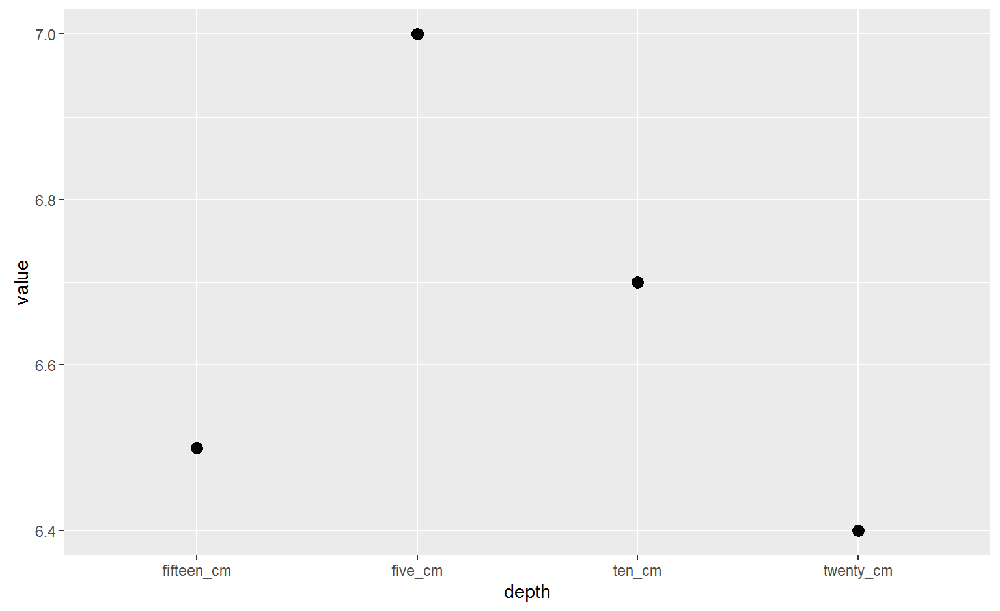
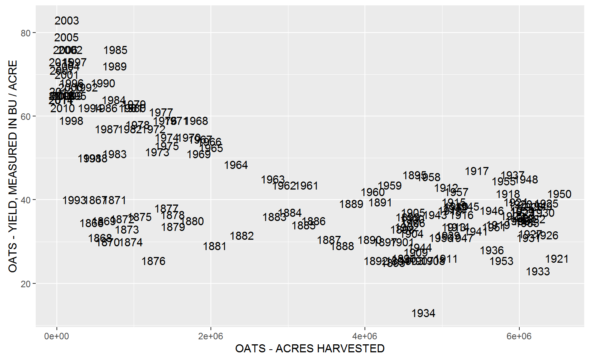

Tidy data

- Each variable must have its own column.
- Each observation must have its own row.
- Each value must have its own cell.
Ranae Dietzel & Andee Kaplan
Like a dataframe, but does less
When you print a tibble, you see
width = Inf.
## # A tibble: 5 × 5
## property five_cm ten_cm fifteen_cm twenty_cm
## <chr> <dbl> <dbl> <dbl> <dbl>
## 1 pH 7 6.7 6.5 6.4
## 2 NO3 35 22.0 20.0 18.0
## 3 clay 20 20.0 20.0 20.0
## 4 silt 20 20.0 20.0 20.0
## 5 sand 60 60.0 60.0 60.0Plot the change in pH across depth?
gatherWhen column names are values instead of variables, we need to gather
## # A tibble: 5 × 5
## property five_cm ten_cm fifteen_cm twenty_cm
## <chr> <dbl> <dbl> <dbl> <dbl>
## 1 pH 7 6.7 6.5 6.4
## 2 NO3 35 22.0 20.0 18.0
## 3 clay 20 20.0 20.0 20.0
## 4 silt 20 20.0 20.0 20.0
## 5 sand 60 60.0 60.0 60.0depth. This is the key.gather## # A tibble: 5 × 5
## property five_cm ten_cm fifteen_cm twenty_cm
## <chr> <dbl> <dbl> <dbl> <dbl>
## 1 pH 7 6.7 6.5 6.4
## 2 NO3 35 22.0 20.0 18.0
## 3 clay 20 20.0 20.0 20.0
## 4 silt 20 20.0 20.0 20.0
## 5 sand 60 60.0 60.0 60.0value. If you know what it is, name it (NO3ppm). If you have many mixed units, you can use value = value or value = measured etc.gathertidy_soil<-gather(soil, five_cm, ten_cm, fifteen_cm, twenty_cm,
key=depth, value=value)
tidy_soil## # A tibble: 20 × 3
## property depth value
## <chr> <chr> <dbl>
## 1 pH five_cm 7.0
## 2 NO3 five_cm 35.0
## 3 clay five_cm 20.0
## 4 silt five_cm 20.0
## 5 sand five_cm 60.0
## 6 pH ten_cm 6.7
## 7 NO3 ten_cm 22.0
## 8 clay ten_cm 20.0
## 9 silt ten_cm 20.0
## 10 sand ten_cm 60.0
## 11 pH fifteen_cm 6.5
## 12 NO3 fifteen_cm 20.0
## 13 clay fifteen_cm 20.0
## 14 silt fifteen_cm 20.0
## 15 sand fifteen_cm 60.0
## 16 pH twenty_cm 6.4
## 17 NO3 twenty_cm 18.0
## 18 clay twenty_cm 20.0
## 19 silt twenty_cm 20.0
## 20 sand twenty_cm 60.0filter(tidy_soil, property == "pH")%>%
ggplot(aes(x=depth, y=value))+
geom_point(size=3) Almost!
spreadUse this if one of your columns is full of what could be headers
## # A tibble: 6 × 4
## Year Commodity `Data Item` Value
## <int> <chr> <chr> <dbl>
## 1 2015 OATS OATS - ACRES HARVESTED 57000
## 2 2015 OATS OATS - ACRES PLANTED 125000
## 3 2015 OATS OATS - PRODUCTION, MEASURED IN $ 11027000
## 4 2015 OATS OATS - PRODUCTION, MEASURED IN BU 4161000
## 5 2015 OATS OATS - YIELD, MEASURED IN BU / ACRE 73
## 6 2014 OATS OATS - ACRES HARVESTED 55000key, here it is Data Item.value column, here they already have it as Valuesspread(oats, key = `Data Item`, value = Value)## # A tibble: 150 × 8
## Year Commodity `OATS - ACRES HARVESTED` `OATS - ACRES PLANTED`
## * <int> <chr> <dbl> <dbl>
## 1 1866 OATS 450000 NA
## 2 1867 OATS 500000 NA
## 3 1868 OATS 560000 NA
## 4 1869 OATS 610000 NA
## 5 1870 OATS 660000 NA
## 6 1871 OATS 750000 NA
## 7 1872 OATS 850000 NA
## 8 1873 OATS 910000 NA
## 9 1874 OATS 960000 NA
## 10 1875 OATS 1075000 NA
## # ... with 140 more rows, and 4 more variables: `OATS - PRODUCTION,
## # MEASURED IN $` <dbl>, `OATS - PRODUCTION, MEASURED IN BU` <dbl>, `OATS
## # - YIELD, MEASURED IN BU / ACRE` <dbl>, `OATS - YIELD, MEASURED IN BU /
## # NET PLANTED ACRE` <dbl>spread(oats, key = `Data Item`, value = Value)%>%
ggplot(aes(y=`OATS - YIELD, MEASURED IN BU / ACRE`,
x = `OATS - ACRES HARVESTED`, label = Year))+
geom_text()